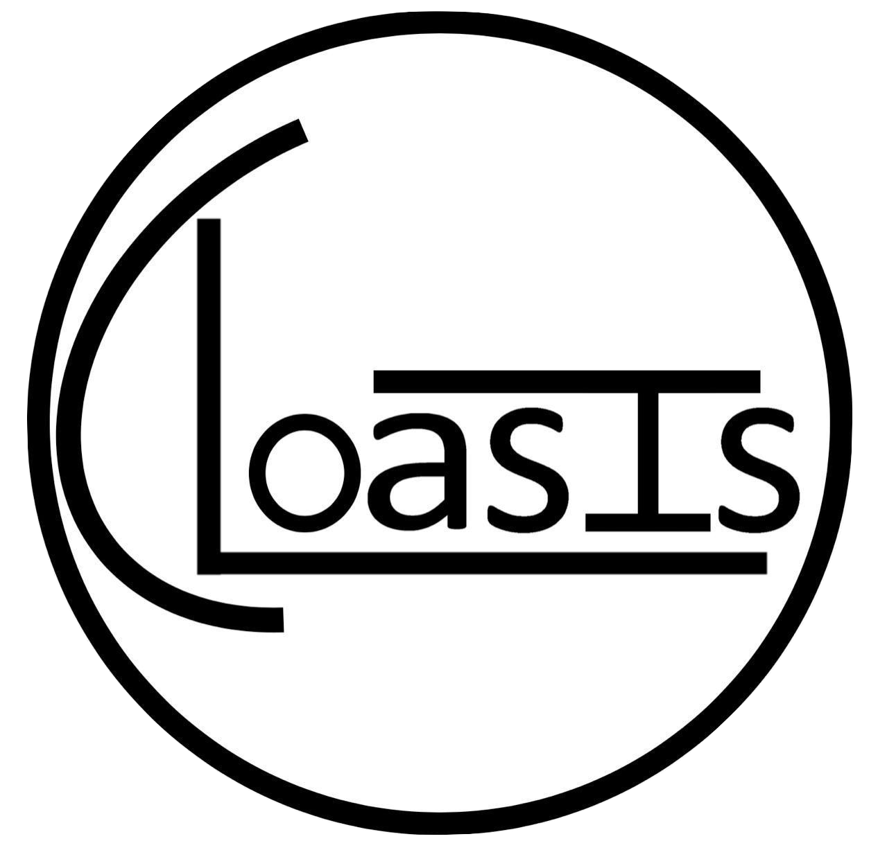

<!-- Main Sidebar Container -->
<aside class="main-sidebar sidebar-dark-primary elevation-4" style="position: fixed;">
    <!-- Brand Logo -->
    <a href="#" class="brand-link">
      
      <span class="brand-text font-weight-light">CLOASIS</span>
    </a>

    <!-- Sidebar -->
    <div class="sidebar">
      <!-- Sidebar user panel (optional) -->
      <div class="user-panel mt-3 pb-3 mb-3 d-flex">
        <div class="image">
          
        </div>
        <div class="info">
          <a href="#" class="d-block">Mahmoud Bdeir</a>
        </div>
      </div>

      <!-- Sidebar Menu -->
      <nav class="mt-2">
        <ul class="nav nav-pills nav-sidebar flex-column" data-widget="treeview" role="menu"
        [ngClass]="{'active': studentLink.isActive || coursesLink.isActive}">
          <!-- Add icons to the links using the .nav-icon class
               with font-awesome or any other icon font library -->
          <li class="nav-item has-treeview menu-open">
            <a class="nav-link" routerLink="/courses" routerLinkActive="active" #coursesLink="routerLinkActive">
              <i class="nav-icon fas fa-university"></i>
              <p>
                Courses
                <i class="right fas fa-angle-left"></i>
              </p>
            </a>
            <ul class="nav nav-treeview">
              <li class="nav-item">
                <a routerLink="/" class="nav-link"
                (click)="changeSelectedState()"
                [ngClass]="{'active': isSelected}">
                  <i class="nav-icon"
                  [ngClass]="isSelected ? 'fas fa-circle' : 'far fa-circle'"></i>
                  <p >{{isSelected}}</p>
                </a>
              </li>
            </ul>
          </li>
          <li class="nav-item">
            <a class="nav-link" routerLink="/students" routerLinkActive="active" #studentLink="routerLinkActive">
              <i class="nav-icon fas fa-user-graduate">
              </i>
              <p>
               Students
              </p>
            </a>
          </li>
        </ul>
      </nav>
      <!-- /.sidebar-menu -->
    </div>
    <!-- /.sidebar -->
  </aside>